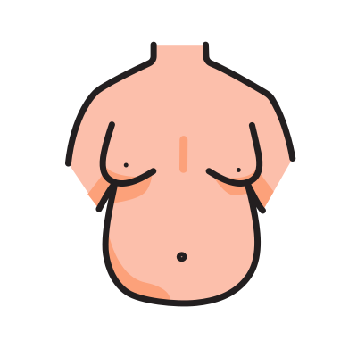
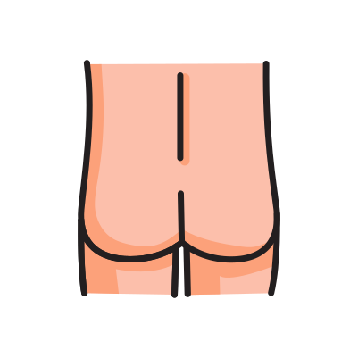
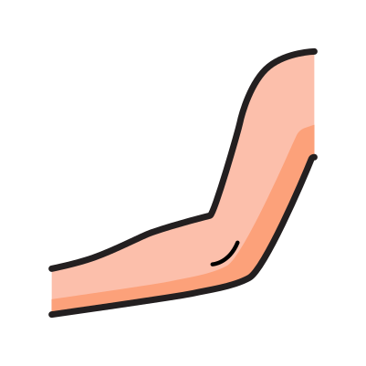
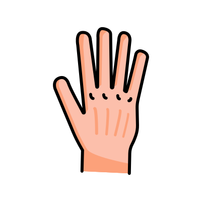
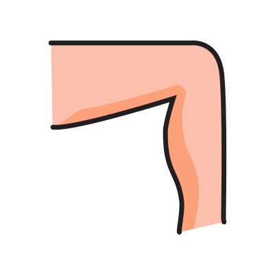
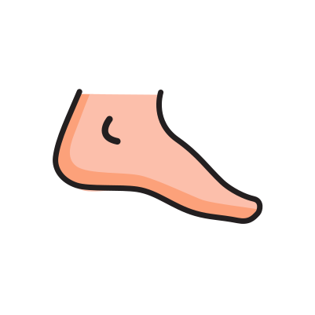

När skrevs receptet?
När tog receptet slut?
Dosering
Hur gammal är patienten?
Hur stor kroppsyta ska smörjas?
Ansikte och hals
0

Bröstkorg och mage
0

Rygg och skinkor
0

Arm
0

Hand
0

Ben
0

Fot
0
Hur mycket ska patienten smörja?
RECEPT
3x1 i 30 dagar från 2022-07-01 till 2022-08-01. 3 stycken förpackningar á 98 tabletter. I dagsläget borde 22 tabletter finnas kvar som enligt receptet bör räcka i 10 dagar